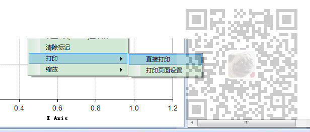

原文出处:本文由博客园博主霸道流氓提供。
原文连接:https://www.cnblogs.com/badaoliumangqizhi/p/12089588.html
原文连接:https://www.cnblogs.com/badaoliumangqizhi/p/12089588.html
场景
在右键菜单ContextMenuStrip下添加子菜单选项可以通过
ContextMenuStrip menuStrip
ToolStripMenuItem mnuChartOption = new ToolStripMenuItem(); //新建菜单项对象
mnuChartOption.Name = "chart_option";
mnuChartOption.Text = "图形选项";
//点击弹出图形选项对话框
mnuChartOption.Click += delegate(object sender, EventArgs e)
{
};
menuStrip.Items.Add(mnuChartOption);
来实现。但是如果在右键菜单的子菜单选项下再添加子菜单选项，形成二级子菜单。
注：
博客主页：
https://blog.csdn.net/badao_liumang_qizhi
关注公众号
霸道的程序猿
获取编程相关电子书、教程推送与免费下载
实现
ToolStripMenuItem 的子级菜单仍然是ToolStripMenuItem ，主要通过DropDownItems属性来构建关联关系。
构建右键二级子菜单示例代码
ToolStripMenuItem mnuDirectPrint = new ToolStripMenuItem("直接打印");
mnuDirectPrint.Name = "directPrint";
mnuDirectPrint.Text = "直接打印";
mnuDirectPrint.Click += delegate(object sender, EventArgs e)
{
control.DoPrint();
};
ToolStripMenuItem mnuPrintPageSet = new ToolStripMenuItem("打印页面设置");
mnuPrintPageSet.Name = "printPageSet";
mnuPrintPageSet.Text = "打印页面设置";
mnuPrintPageSet.Click += delegate(object sender, EventArgs e)
{
control.DoPageSetup();
};
ToolStripMenuItem mnuPrint = new ToolStripMenuItem();
mnuPrint.Name = "mnuPrint";
mnuPrint.Text = "打印";
mnuPrint.DropDownItems.Add(mnuDirectPrint);
mnuPrint.DropDownItems.Add(mnuPrintPageSet);
menuStrip.Items.Add(mnuPrint);效果
